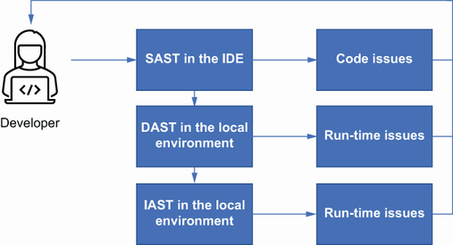

Part 2. Developing the application security program
5 Security belongs to ever yone
Exploring how organizations can release secure code
Explaining what a DevSecOps pipeline looks like
Looking at why DevSecOps supports security better than other release methods
Differentiating a DevOps model compared to other models
Discovering how to use a fast feedback loop for security issues
In this chapter, I will show some release methods that are in practice in most organizations. While each has its pros and cons, release methods such as DevOps can support a more secure method of delivering software. If you are not familiar with DevOps, it is a set of practices that bring together development and operations to deliver software in an efficient manner.
Definition Microsoft defines DevOps as a compound of development (Dev) and operations (Ops). DevOps is the union of people, process, and technology to continually provide value to customers.
What has been historically the case for software development and release is that there is a product team, a development team, a testing team, and an operational team that all take part in the delivery of features and products to a production environment. This is typically done in a way where each team has gates that start and finish their part of the process. DevOps intends to streamline that process and reduce or eliminate the hand-offs between teams. Most organizations will accomplish this by creating a single team that owns not just the development of the code, but the testing and delivery as well. In some smaller organizations, there may only be a few people on the team who do all of these activities themselves; in larger organizations, specialists would be used to perform specific tasks within the team. For instance, in these larger teams, there would be one or more people focused solely on the deployment, or just the testing, as well as having developers focused on the code. However, in all of these cases, the team would share the work items as one team.
DevOps is primarily a function of automation, tooling, and processes. This model works best when there is little to no manual work or processes. Some of the most successful organizations that use a DevOps model are able to deploy code from a development environment to a production environment in minutes. And they can do this multiple times a day. To achieve this level of speed and confidence, the organization will build a CI/CD pipeline.
Definition A CI/CD pipeline is where code is continuously integrated (CI) using an integration tool like Jenkins, and continuously delivered or deployed (CD) using deployment tools like Octopus or Ansible. Code is built into packages that are automatically pushed to a production environment (continuously deployed) or could require a manual step to push code to production (continuously delivered).
The confidence in deployment is built in through strong controls around how source code is tracked, merged, and versioned. Testing must occur all throughout this model, from the developer’s unit test at the lowest level, up to the testing of API integration and system testing. Lastly, monitoring of the application in production for potential issues and having a rapid feedback loop to the development team will reduce the time to fix issues as they are found. This gives greater confidence to the development team that they can deploy and fix code rapidly. This certainly enables the developer to feel empowered, but where does security fit?
Note There needs to be a clarification between DevOps and CI/CD. Although there is some overlap in the implementation, CI/CD focuses on the automation and the tools that deliver software to an environment. DevOps focuses on culture and process in order to produce software.
The general appeal of DevOps is that it allows for a rapid resolution of discovered issues. As an application security person myself, this makes me happy. This means that if the developer has the right information and knows how to resolve a vulnerability, then they can fix a vulnerability and have it running in production in a short period of time—maybe even within a day! But getting to this point requires a few things to be in place and working well. Without getting into the specific tools, a successful DevSecOps pipeline provides the following capabilities:
Educating, enabling, and empowering the development team to make security decisions during the development process
Fewer security gates in favor of faster, more targeted testing using automation
Vulnerability management that provides a fast discover>triage>report>resolve process
I’ll break each of these down here in this chapter. But first it’s important to understand that the basic security tools and processes that I’ve covered in the previous chapters still hold true even in a DevOps model. There is still room for threat modeling, static application security testing (SAST), and penetration testing, for example. However, where they are integrated and by whom changes.
As described previously, a DevOps pipeline consists of automation that integrates and delivers code to a production environment. The tools that are part of that pipeline vary in each organization, but the fundamental pipeline for code to be delivered will resemble figure 4.1.
Figure 4.1 Standard components of a DevOps pipeline
In figure 4.1, the automation occurs at every step unless the organization has decided to add a manual step for deployment. For simplicity, in the rest of this chapter we will assume continuous deployment where the code is sent to production automatically as long as it has cleared all automated testing and checks.
For the pipeline as shown in figure 4.1, the code goes through the following process:
The code is committed by the developer once they have completed development.
It enters a build process that pulls together the different libraries and components together in order to create the application.
The unit tests are run that test the code changes for any potential regression issues.
If the build and test complete on the local level, the code is merged to a trunk where additional tests are initiated in order to perform tests with the code change in the context of other components of the overall system, like APIs and other products in the organization.
If the merge and integration testing complete without failure, then the artifact like a jar or war file is deployed to a preproduction environment where additional testing is run as the final stage prior to production.
Lastly, assuming that there are no issues found in the preproduction environment, the artifact is delivered to a production environment and is now live for customer interaction.
At each stage of the pipeline, the processes and tools ensure that all checks are complete before the code is moved to the next stage. For instance, if the build breaks in the developer’s environment, then unit tests are not triggered. Likewise, if integration tests fail, then the code is not delivered to a preproduction environment. This model moves code rapidly through the system with each component tied to the next through automation. Although there are many steps in figure 4.1, some organizations can accomplish most or all of these steps through one platform and can do so rapidly.
Note GitLab is a common platform that can perform most of these components, allowing organizations to build, test, deploy, and monitor their application.
This process of code deployment can occur many times a week, a day, or an hour, with each release bringing new features to customers at a rapid pace.
There are many different processes and models to release software. Similar to choosing the right security controls that align to the actual risk it is attempting to protect, the right release methodology needs to be in line with the organization’s goals. If you are an organization that needs to release software multiple times a day like Facebook, Amazon, Netflix, or Google do, then a DevOps model works well. If you are an organization that requires more strict control over your code releases, like a health care or critical infrastructure organization, a Lean or Waterfall methodology may work better. The important takeaway with these different methods is that every organization approaches their release cycle differently. In fact, in many organizations, they will not follow just one approach across the organization and may even combine different ones to gain efficiency. For example, some teams may follow a DevOps model while others are Lean, and others may use a CI model while working in a Waterfall methodology. I will describe these methodologies next.
Waterfall is a methodology that depends on each part of the process acting as a checkpoint where formal sign-off must be achieved before the next part of the process can begin. This, of course, leads to a long deployment process and can have the impact of the organization releasing features that are no longer considered cutting edge.
In a typical Waterfall model, there are several stages (figure 4.2). Much of this will sound familiar to what has been described in previous chapters. This is largely because many organizations built their application security programs while their engineering teams still worked in a Waterfall methodology.
Requirements phase—Where product requirements from the client or internally within the organization are defined and documented.
Analysis phase—Where the scaffolding of the application is defined, including the database schema and business rules that will govern the way the application works. For instance, the application requires authorization from an administrator for certain critical functions.
Design phase—Begins to build the architecture of the application and makes key decisions on technology.
Implementation phase—Where the real fun begins. Everything to this stage has been to clearly define what needs to be created while coding.
Testing phase—When code has been considered complete and begins to go through the process of testing which is likely to uncover defects that will need to be resolved before the final product reaches production.
Operations phase—Where the operations team takes over and ensures the uptime and patching of the application as it’s running.
Figure 4.2 Waterfall methodology
Once these phases are complete and the code is running in production, the process starts again with a new set of requirements. The release could have been a monthly, quarterly, or even a biannual release. These releases tend to be large with many features, hence the heavy process to ensure that everything is accounted for and production-ready. However, in this process, there is typically a part of the development team that is needed to manage the incoming production defects. They process these defects and push fixes to production in something like a fix pack, but still with the proper oversight of a change control entity that ensures that changes are properly considered by an audience of stakeholders.
Security in Waterfall is handled primarily through two avenues. One is through the methodology itself during the requirements gathering, the design phase, and the testing phase where the security team or tools within the organization will impose security. Some of the requirements that are pressed may be part of regulatory, compliance, or contractual needs. New security technology will also be required by the security team if it provides better protection for the organization. The security tools that are either integrated with the development environment or during the testing phase will uncover different security issues that will be treated as defects where they will be triaged, assigned, and resolved.
The second way that security makes it into the Waterfall methodology is through the support path. If a vulnerability is found in production, the support team will typically be alerted and will be required to triage and resolve it in a fix release. This is true for not only issues that may be reported by external parties, like clients, but also for issues that are discovered when components that are used in the application become vulnerable. This can happen when a weakness is discovered in something like the web server or a parsing library that has a newly discovered vulnerability that needs to be resolved quickly. Waiting for the next release cycle for a critical or high vulnerability to be resolved is unlikely to win over any fans.
Although Waterfall can create latency in the process of releasing software, the lines for injecting security in the process are pretty clear. Need to get security requirements in? Do that during the early phases. Found a vulnerability after the code is in production? Open a ticket with the support team. What happens when the process is kicked up another notch?
Agile is another methodology that allows for development teams to deliver software to clients. However, in this case the process is continuous and has the intent of getting software to the client often and quickly, as shown in figure 4.3. Agile methodology is typically associated with Scrum and Kanban frameworks, where there are short iterations and clear work items outlined for a given time frame.
Figure 4.3 Agile process diagram
Agile methodology focuses on delivering software quickly through collaboration within the organization as well as with the client. Agile is also able to adapt to changes without impacting the delivery of software, hence the name. Unlike Waterfall, which requires a more structured approach to intake new requirements, Agile allows for changes to be integrated in a short period of time. If the development organization is using something like Scrum in their Agile methodology, the development team would work in sprints that are a short burst of work over 2, 3, or 4 weeks. The goal in a sprint is to complete some minimal viable product by the end of that sprint that can be delivered to a client. In most cases, a 2-week time period for code release will not provide enough time to release a large change, but a small viable proof of concept on a feature is possible. This can then be delivered to an environment for clients to “touch and feel” and provide their feedback.
The development team that works in an Agile methodology is typically small, and tends to be cross-functional, or full-stack, where the team has ownership of all components of the application development and deployment. This means that the team will own the user interface, the business logic development, the database schema and development, the configuration management, the deployment, and the operational aspects of the application. A team that strictly follows Agile will follow the 12 principles in the Manifesto of Agile Software Development:
Customer satisfaction by early and continuous delivery of valuable software.
Welcome changing requirements, even in late development.
Deliver working software frequently (weeks rather than months).
Close, daily cooperation between businesspeople and developers.
Projects are built around motivated individuals, who should be trusted.
Face-to-face conversation is the best form of communication (co-location).
Working software is the primary measure of progress.
Sustainable development, able to maintain a constant pace.
Continuous attention to technical excellence and good design.
Simplicity—the art of maximizing the amount of work not done—is essential.
Best architectures, requirements, and designs emerge from self-organizing teams.
Regularly, the team reflects on how to become more effective, and adjusts accordingly.
Agile focuses more on individuals contributing to the greater good than relying on technology and processes to bring software to a reality. This leads to quicker, and sometimes more impactful, decisions being made at the lowest level within the development team. The teams are empowered but also reap the consequences should something go wrong. For instance, a poor design decision made by one developer could impact the rest of the team when it comes to support.
How does security integrate in the Agile methodology? Similar to the DevOps methodology, Agile allows for quick development and deployment of fixes for security vulnerabilities. These found vulnerabilities can be triaged by the application security team, presented to the Scrum team for prioritization, and worked in a future sprint. This means that, in theory, a fix for a security issue could be in production within a few weeks; shorter if the issue is severe enough. Where there are some potential issues is getting security vulnerabilities prioritized and understood by the development team and the product owners. There will almost always be pushback, especially when time frames are short and client features need to go out. However, similar to Waterfall, the Agile team may have a separate Scrum team that is responsible for resolving defects found in production and potentially picking up security issues as well. When there is a separate work stream like this, it allows the development to continue unimpeded while support and security work would be merged into the development branch or released as its own fix pack.
Lean has been in practice for decades, going back to the early automobile assembly lines in order to streamline processes, optimize people and resources, and more importantly eliminate waste. When the Lean concept was introduced to the world of software development, its purpose was to focus on reducing waste and maximizing value to deliver quality products quicker. Thereafter, it was not surprising to see development practices leveraging both Lean and Agile to optimize software development practices in what is commonly called Lean Agile. There are five key principles that lay the foundations of Lean:
Defining value—This is what the customer is looking for and is willing to part with their money to get.
Map the value stream—Identifying the tasks and components that make that value a reality. Those that do not add value are wasted motions.
Creating flow—This is where impediments are removed, and the process is defined well enough to ensure that the value stream is smooth.
Establish pull—This is where the work in progress is reduced while ensuring that just enough is being done for a smooth flow of work. The goal here is to eliminate context switching, which is ineffective.
Pursue perfection—This is reducing overall waste and always looking for process improvement by asking questions around the efficiency of the current process.
These key principles can be applied in various fields and practices, including software development. It may not be surprising that many people adopt Lean practices even in their daily lives for nontechnical practices.
Since the introduction of Lean Agile, the software development practice has been able to reduce rework and waste by replacing Waterfall development in many organizations. This would increase the ability to deliver marketable features quicker and continue to improve the development practice along the way. The Lean culture not only allows teams to continue to improve but also creates a culture where discovering ways to become more valuable for the collective team becomes an acceptable practice.
Today, most mature software development teams are practicing Lean Agile as an inherent by-product of the two methodologies combined. Lean software development principles incorporate the original Lean and Agile principles by
Identifying and eliminating wasteful steps and practices
Building in quality through paired programming and test automation
Encouraging knowledge sharing practices with other team members
Deferring commitments and plans without having full knowledge of scope/plan/work
Delivering faster with targeted scope and features
Embracing and respecting people’s opinions/input/feedback for continuous improvement
Optimizing the whole by seeing the bigger reward and not focusing solely on one function or one practice
In software development, reducing waste means focusing on the most needed requirements that are the most marketable and consumable for the users, as shown in figure 4.4. In addition, leveraging Lean also supports the concept of having a full-stack team, where the team includes not only the core developers, testers, and project managers but also the environments, network, and security resources. These specialized roles are also included to ensure delivery of the product at the highest value.
Figure 4.4 Lean process diagram
How does application security work inside of a Lean methodology? Security involves many different aspects, including application, infrastructure, and business risk. Because these aspects are so vast, identifying and prioritizing the security risks have become more complex and manual. In the Lean world, this may amount to potential waste and rework. Lean in application security should be used to unblock security processes and procedures and insert security into the software development life cycle. This is accomplished by aligning security practices into software development that will increase participation and reduce rework by incorporating security requirements and practices during requirements, analysis, and design phases. In addition, Lean in security includes establishing security monitoring and continuous improvements as the product evolves and matures through the software development life cycle.
One important callout related to Lean in application security is that it works well with other software development methodologies such as DevOps and Agile, considering that Lean is an approach that looks for continuous process improvement. As mentioned with other methodologies, the tools that are used elsewhere to provide security are still applicable here. Threat modeling, code reviews, test automation, and monitoring are all still needed to provide assurance that security is baked into the product when it is delivered to the customer. The major difference is the focus on a “test and learn” approach that attempts to continuously review the security processes in each stage in order to understand where improvements should be made. An example of this would be in the case of threat modeling. When performing a threat model, regardless of the methodology, it’s important to validate that the model is accurate. After a recently completed threat model for an application, it may be found that through validation, a control that was assumed to be present was not. In this case, the security team and the development team will review their threat modeling process and develop better process documentation, as well as ensure that the appropriate stakeholders are included in the threat modeling process.
DevSecOps, SecDevOps, DevOps with security, it’s been called many things. I’ve mostly heard it referred to as DevSecOps, so that is the term I will use here. Like the parent term of DevOps, the DevSecOps definition can depend on the process and technology.
Definition IBM defines DevSecOps as automatically baking in security at every phase of the software development life cycle, enabling development of secure software at the speed of Agile and DevOps.
The methodologies I covered previously each provide a means for security to be integrated; however, the DevOps methodology provides a unique opportunity for security to be more rapidly combined with other features in the development pipeline. As described, DevOps, and by extension DevSecOps, allows for development teams to have security fixes deployed to a production environment as quickly as the CI/CD pipeline can support.
In today’s environments, where your applications are running, security issues are ever present. In early 2021, Redscan released a report that reviewed the trends in vulnerabilities that were added to the National Vulnerability Database (NVD) from 1989 to 2020. This report highlighted how much has changed over that time and specifically how 2020 was a banner year for new vulnerabilities. The report found
More security vulnerabilities were disclosed in 2020 (18,103) than in any other year to date, at an average rate of 50 CVEs per day.
57% of vulnerabilities in 2020 were classified as being “critical” or “high severity” (10,342).
There were more high and critical severity vulnerabilities in 2020 than the total number of all vulnerabilities recorded in 2010 (4,639, including low, medium, high, and critical).
Nearly 4,000 vulnerabilities disclosed in 2020 described as “worst of the worst,” meeting the worst criteria in all NVD filter categories.
Low-complexity CVEs on the rise, representing 63% of vulnerabilities disclosed in 2020.
What does this tell us about what we are up against in application security? Vulnerabilities are being released at a rapid pace, and they are becoming easier to exploit. This means that in order to stay ahead of significant issues, application security needs to be able to move swiftly as well. With this in mind, the methodology that the engineering organization has decided to use matters. For instance, in the Waterfall methodology, waiting possibly weeks or even months to release a resolution to a found vulnerability would leave the organization exposed much longer than necessary. Even in an Agile organization, a fix might be weeks away. Pretty fast, but not fast enough for an attacker who might already have code that exploits a CVE that was just publicly released. Attackers today can take information from a CVE and turn it into an exploit within hours.
This is where a methodology like DevSecOps can support the rapid deployment of security fixes (figure 4.5). A well-tuned pipeline should allow, depending on the vulnerability, for a fix to a security issue to be deployed within hours assuming that the application security team has a well-defined process for triaging and assigning found vulnerabilities, and the DevSecOps team has the ability to pull in code changes, test, and deploy in a rapid manner.

Figure 4.5 DevSecOps process diagram
There are several key practices to keep in mind when building security into a DevOps pipeline:
Security issues are no different than any other software defects. In fact, they should be indistinguishable from software defects, considering that vulnerabilities are essentially a software defect that has security implications. Consider a defect like a memory leak in a software program. This can be leveraged by an attacker to consume the resources on the server and make the application unavailable. However, even without the security considerations, this is still an application issue that impacts the performance.
Automation of security should be a priority. Just like there are automated tasks within the CI/CD that run tests, perform deployment, and run checks, security should be no different. In this case, the running of SAST, DAST, SCA, infrastructure code configuration checks, and the like should be made part of the CI/CD with feedback to the development team.
Present tools to the development team. Once the previous step is integrated in order to ensure that security is an automated part of the CI/CD, the findings in those tools need to be presented to the development team as early as possible and enabled to block the build from completing successfully and deploying vulnerable code. This last point is critical. Code should not be allowed to continue to a production environment with known vulnerabilities—just like the failure of a regression test would stop the build from progressing.
Once the application is deployed to a production environment, it is important to continue to monitor it for security related issues. As I mentioned previously, things like insecure third-party libraries are a constant concern and can be introduced after the code is deployed to production. If everything goes well in the CI/CD and there were no found vulnerabilities with the developed code, that still doesn’t mean that a third-party library that is used by the application would always be secure. Additionally, as infrastructure is today being set up and configured as code, called infrastructure as code (IaC), there is a unique opportunity to apply a consistent approach to secure infrastructure, but in order to do this, the organization needs to have a method of monitoring for configuration drift. This is where a single change is made in a production environment, often through manual means, which varies from the IaC templates that the organization normally uses.
Considering these practices when developing the pipeline will give the organization the better protection against the deluge of vulnerabilities. Practices aren’t always enough. Having the right tools integrated at the right time matters as well.
Taking the example of Superior Products, they have been using the DevOps methodology for some time and their development teams consist of developers, testers, operational people, and, of course, Dashing Danielle. She has worked tirelessly over the past few months building in the following tools and processes:
SAST has been integrated into the developer’s IDE where the developer has the opportunity to scan their code for security issues early.
SCA is integrated into the IDE as well as in each developer’s browser as a plug-in. The IDE integration allows for the developer to identify issues in the third-party libraries that they are using in the building of their software. The browser plug-in allows the developer to research new libraries with confidence that there are no known security vulnerabilities impacting the library they are reviewing.
When the developer issues a pull request to submit code, the code repository tool requires the developer to submit the results of their SCA and SAST in the pull request.
The Continuous Integration tools have SAST and SCA tools enabled that incrementally scan the code changed when the developers code is integrated with additional code changes from other developers.
DAST is integrated into the testing environment to ensure that once the code is integrated and deployed to the testing environment, security tests used to scan while the application is running are triggered. This also includes the use of automated penetration testing tools to augment the DAST scan.
Dashing Danielle integrated the ticketing system that is used in Superior Products so that any tools that identify a security issue will generate a defect, assign it to the appropriate development team, and alert them of a new finding on their collaboration channels. The defect is opened with recommendations from the scanning tools on how to resolve the found issue.
This setup allows Superior Products to rapidly identify security issues, get them to the right team, provide resources on how to resolve the issue, as well as develop a criticality and timeline for issue resolution based on the organizations resolution policy. This well-oiled machine is capable of finding and resolving security issues rapidly before the code is deployed to production.
What about Acme Services? They’re not as up to speed as Superior Products, and although they are using an Agile methodology, their releases are only deployed to production once every 4 weeks. They are still relying on a SAST tool that only runs once the code has been checked into their code repository and the continuous integration engine picks up the changes. Furthermore, the development team has decided not to trigger a failed build when vulnerabilities are found due to the timeline commitments to get code deployed at the end of the 4-week sprint. This means that code is built with vulnerabilities identified and is then deployed to a testing environment with the known vulnerabilities. Acme Services has decided to partner with their internal penetration testing team to run a penetration test prior to the final build package being completed. This ultimately means that vulnerabilities are discovered late with the intention of queuing up the vulnerabilities that are found into the next sprint and subsequent release. This leaves them potentially exposed for weeks and shows the power of having tools integrated throughout the process.
As I mentioned, most of the tools that have been discussed previously in this book are still valid in a DevSecOps pipeline with subtle differences. There are also platforms and tools that are built specifically for the rapid release cycle of DevSecOps that can aid in the development and delivery of code in a secure manner, as shown in figure 4.6.

Figure 4.6 DevSecOps according to OWASP
In the rugged DevOps pipeline, your initial entry is through intake where there are still manual and people-led activities such as threat modeling and a secure design assessment. From here, a well-tuned pipeline lets the tools do the work of identifying and coordinating the vulnerabilities that may have been uncovered. I’ll cover these next.
I covered threat modeling in earlier chapters where I described the process of identifying threats that impact a given design or architecture with the goal of identifying threats that can impact an architecture as early as possible. One key difference with threat modeling in the DevSecOps methodology is the need to address operational threats early as well. This means finding threats that impact the code once it is deployed to a running environment. Some example threats that impact the operational environment are
Lateral movement in an operational environment where a compromise allows the attacker to pivot to another system.
Changes to configuration after the application has been deployed that open the environment up to potential attacks—for instance, turning off security controls during a troubleshooting session.
Improper segmentation between production and nonproduction environments that lead to the ability of an attacker to compromise a nonproduction environment in order to pivot to a production one.
An attack on any of the key resources for application security, such as hardware security modules (HSMs), and secrets used by the application that potentially lead to an availability issue.
Threat modeling is still a valid input into the development of requirements in DevSecOps by simply asking “What can go wrong?” and “What can we do about it?” One of the key benefits of having operational resources assist with the exercise of threat modeling is that they are in the unique position of seeing firsthand how the application can be abused. If you ever listen in on a conversation between a developer of an application and a person responsible for the deployment and operation of that application, you will hear two different voices on how the application actually works. The operational resource will have a much different perspective on how the application is actually used by end users. Chances are, they will see the application being used in creative ways that were not considered by the developer or even the application security team. This is the power of threat modeling in DevSecOps. Identifying potential flaws with those that understand how the product works, and can be broken, will improve the quality and security of the application when the design decisions are being made.
One of the hurdles with threat modeling in the DevSecOps methodology is that it does not react well to slow processes. As I described in previous chapters, threat modeling can be done through a manual process with a whiteboard and subject matter experts or through a tool such as Microsoft’s Threat Modeling Tool. Neither of these can feasibly be used in an environment where releases are happening multiple times a day. This means that threat modeling has to occur at a higher level during design and architecture decisions when requirements can be outlined and integrated.
To complete a threat model in the DevSecOps methodology, the team will engage in the same threat modeling process as in any other methodology. This means that during the design phase, while requirements are being determined, the subject matter experts will gather to perform a more formal threat model that takes into consideration the design choices being made and the impacts to the application based on those choices. The threat model should be well documented and included in the requirements tracking tool or the code repository tool that the development team is using so that it is available for review and for updates as new alterations are made.
However, in the DevSecOps model, some critical decisions are made at impromptu meetings in the team room or in virtual meetings. In this case, threat modeling is less of a formal activity and instead relies on security-minded resources being able to think on their feet about the different issues that may impact the design choice that they are making. This requires security to be tightly integrated with the DevSecOps team. A successful approach to this is to have application security resources embedded in the actual DevSecOps team that can raise questions about the various threats that may impact a given decision. This security-minded team should understand the following:
What are the current threats to the application based on the design choices and architecture?
How do these threats impact the application, and are there known weak points?
What current countermeasures are in place or need to be implemented to eliminate the threat or reduce the risk?
Even taking a moment to stop and ask these questions will help the team determine what the basic risk is on the decisions that they may be making during discussions that fall outside the more formal threat modeling process. Getting to this point will require a culture change within the organization since it requires people rather than tools like the ones we’ll cover next.
Static application security testing is not known for its blinding speed. In fact, as security tools go, SAST typically gets a bad rap. I’ve done my fair share of complaining about SAST tools, their speed, and their abundance of false positives. I’ve seen others liken it to the shotgun approach. Not very precise, but effective if you are looking for results. This can become exacerbated if the organization has not taken the time to properly tune the SAST tool. This can be a recipe for disaster. It produces a lot of results that then need to be triaged and processed. What’s more, it adds a lot of time to the build process, further upsetting the development team.
As I mentioned, DevSecOps only works well when there is actionable information that can be utilized by the development team in a timely manner. Although SAST tools can be noisy with potential for a lot of false positives, it’s actually an extremely useful tool for detecting issues early in the development pipeline, especially when the application security team and the products they support use SAST in their IDEs and tune the SAST tool per application with specific invariant enforcement, antipattern detection, and specific issue detection, as depicted in figure 4.7.

As you can see, integrating SAST with the intention of getting feedback to the developer as soon as possible provides the ability for the development team to respond and resolve issues quickly. As an example, one of the developers at Superior Products is working on a new feature and is ready to check in their code. Prior to doing so, the developer runs the SAST tool that is integrated into their IDE and scans the code for potential vulnerabilities. During the scan, it is discovered that the developer has a potential cross-site scripting vulnerability that was coded since the code takes input from the user through a form but does not validate that the input does not include script. The integrated SAST tool provides recommendations on how to resolve the issue, and the developer confirms with Dashing Danielle that the recommended remediation will resolve the issue. The developer codes the fix, rebuilds, and rescans with a clean output from the SAST tool.
Once the developer commits their code to the code branch, additional static analysis scans are performed where the entire application is taken into consideration as opposed to the targeted and incremental scan at the IDE level. The branch scan detects a possible buffer overflow that was introduced when the developer’s code was merged with another developer’s code. The buffer overflow is reviewed by Dashing Danielle and the team, and a remediation plan is devised. With the code resolution in place, the local and branch builds both successfully complete with no further findings from the static analysis scans.
Once the code has proceeded through the pipeline, from the developer’s environment through the build process and is deployed to a test environment, it is ready for further security testing. One of the methods I spoke of previously is dynamic application security testing (DAST). This provides a look inward at the application and attempts to discover security issues as it runs in an environment. Likewise, interactive application security testing (IAST) can be run inside the application and see attacks as they happen, allowing the tool to observe and report on vulnerabilities. As you can assume, you may not want to run DAST or IAST in a production environment, as shown in figure 4.8, as it has the potential of disrupting normal, legitimate traffic and creating a production outage. However, there are some DevSecOps models that organizations use that allow for at least DAST to be run in both the preproduction and production environments.

Figure 4.8 IAST and DAST in DevSecOps
Ideally DAST and IAST would be run in the same testing environments that are being used for other testing, like regression and integration testing, as these environments should already be set up and configured for testing. One of the benefits of this setup is that IAST tools need to see activity in order to report on a finding. In other words, to uncover a vulnerability in the code, the application is instrumented with an agent that continuously monitors the application for incoming attacks and reports on the findings. Having a suite of regression tests will help the IAST instrumentation detect potential attacks.
Fortunately, many IAST tools can be run even earlier in the process. Developers will have running application environments that are local on their machine or will at least have an environment where early testing can be done prior to pushing code to a branch. If the organization has decided to make IAST available to the developers in their local environment, the developer will be able run the chosen IAST tool in that initial environment to uncover issues prior to pushing code to a branch. If the organization has made the commitment to integrate IAST in the developer’s environment, then the developer will be able to run unit tests that will intentionally execute workflows that should trigger alerts in the IAST tool. When something is found, the developer will be able to react quickly to resolve the issue.
The preproduction environment is where more functionality has been integrated with the application, and the IAST tool will be able to discover broader issues that can only be located once the code has been integrated in an environment that moves beyond the unit tests and begins to run integration and system tests. It will take additional time for the developer to resolve the issue since it would be found later in the process, but it is still preferable to finding an issue in the production environment.
Complementary to IAST, DAST can be pointed to an environment and run as a security test against that environment. Although it can be used in the development environment, same as IAST, it is more effective as a point-and-shoot tool in preproduction environments where all the code and features are integrated. Ideally, the DAST tool will only test what has changed in an application, perhaps a new feature, UI, or API. This can be accomplished using parameters for a targeted DAST. This type of incremental scan fits well into the DevSecOps model.
DAST can be run in a production environment, but in most cases the risk of hindering production traffic is too high. Additionally, if the tools have been properly integrated in the lower environments and the developer’s environment, then the need for production environment testing is less critical, as shown in figure 4.9. I prefer to avoid running testing style tools in the production environments and instead focus on the run-time protection tools in production.

Figure 4.9 IAST and DAST in developer’s environment
One additional point of DAST and IAST in the DevSecOps model is that it is necessary to have a feedback loop back into the developer’s collaboration and defect tracking tool. When this is working well, the findings in either of these tools will be able to alert the developer of a finding. This is more critical the farther right in the pipeline the issue is found, like the preproduction or even the production environment. Table 4.1 shows the pros and cons of SAST, DAST, and IAST.
Table 4.1 The pros and cons of three different application security scanning tools
At Superior Products, the developers have the appropriate static analysis tools running in their environment, as mentioned previously. To take their scanning tools and techniques a step further, they integrate both DAST and IAST to ensure they are able to get additional security issues identified and resolved in a timely manner. Dashing Danielle has helped them devise a process to leverage the IAST tool in combination with unit tests, and other testing suites. This has been integrated into the developer’s local environment, which provides them the advantage of seeing only the vulnerabilities that impact the code changes that they made, before the code is checked into a code branch. The tool can identify issues during the running of the tests and point to specific lines of code so that the developer has the ability to make the needed changes.
Prior to code check-in, one of the developers at Superior Products leverages their IAST tool in combination with their unit test to determine whether any vulnerabilities are present with the new code that has been written. The IAST tool discovers that there are a few SQL injection flaws in the new UI. After consulting with Dashing Danielle, it’s discovered that the developer has not used the scrubbing function that has been built to take user input and detect whether there is a possible injection attack being attempted. Once the developer adds this additional function to reject possible injection attacks, they rebuild the code and rerun the tests. This time the IAST tool determines that no issue has been found and the team is satisfied with continuing to integrate the new code and deploying it to a lower test environment. Here the system and integration tests are run, and additional results can be found from the integrated IAST tool. During this additional testing, it is found that an XSS attack is possible in code from a developer who skipped the IAST scan. A defect is opened, the team is alerted on their collaboration tool, and the developer is visited by Dashing Danielle, who spends time outlining the purpose of the IAST tool and the benefits to the organization, which is not only more secure but also has saved potential costs related to detecting and resolving the vulnerability in production.
In this preproduction environment, Superior Products has integrated their DAST tool as well to uncover additional issues. The DAST tool will complement the IAST tool nicely, where findings from IAST rely on indirect testing of the application to provoke a finding, and the DAST tool will crawl the entire application and send attack patterns to weak areas of the site to test whether an attack would be successful. The results from the DAST tool will be less precise than the IAST tool, leading the development team to work with Dashing Danielle to triage and discover duplicates from the IAST tool. In this instance, the DAST tool identified a potential buffer overflow issue when the DAST tool overwhelmed one of the inputs through fuzzing. The development team worked with Dashing Danielle to identify whether this issue was discovered in the IAST or other tools in the DevSecOps pipeline. However, once the duplication review and triaging of the issue is complete, the development team has determined that the finding is true and will be able to resolve it prior to it getting released to a production environment.
As I previously mentioned, DAST can be run in a production environment, but this is not recommended, as it can have unforeseen impacts, such as availability issues or corruption of data. There are options to have DAST run less destructive testing, but the organization needs to weigh the cost and benefit. Another alternative reason for running DAST in production would be for testing the security tooling and alerting for the security organization. Perhaps the organization would like to learn whether the security operations center (SOC) is able to detect incoming attacks. Otherwise, so long as the organization has confidence that its preproduction environment mirrors its production environment (and it really should), then running DAST in the preproduction environment should suffice.
Note In reality, most organizations will only choose one lower environment to run these types of tools. License cost can quickly explode if you are being charged “per environment.” It depends on the vendor and their license structure.
As I covered in previous chapters, software composition analysis is used to detect issues with libraries used to build the application that are from a source outside of the organization. These are typically libraries that are from third-party sources or within the frameworks used to build and run the application. An example would be Log4j used by Apache as a logging framework. Frequently, these third-party libraries will be found to have vulnerabilities in their code that require patching. Nothing different than what any organization would do if they found a security issue within their own code that required a patch. In order for an organization to resolve an issue that was found in the third-party library, they will need to package the latest, nonvulnerable version of the library in their own application.
Note There are cases where the vulnerable library may not have a nonvulnerable version to upgrade to. Every organization will treat this situation differently. In general, the organization should review its mitigation tools, techniques, and processes to ensure that it is able to address the risk until the vulnerable library can be upgraded.
SCA tools are used to match the third-party libraries that are used in the application against a list of known vulnerable libraries that are publicly disclosed; usually on a well-managed repository like the National Vulnerability Database (NVD). It should be no surprise that the earlier in the process this can be completed, the better for the organization, as a change in a library could mean a redesign of the application depending on the library, as shown in figure 4.10.

What this means in the DevSecOps pipeline is that the developer needs access to information regarding the safety of the libraries that they are considering and packaging within their application. This can be accomplished in a few ways. Most vendors today have IDE plug-ins or even browser plug-ins that will let the developer know that the library they are reviewing or about to leverage in their application has a known vulnerability associated with it. Keep in mind that with SCA, the library must have a known weakness, usually in the form of a published CVE that is reported in the NVD. Some SCA vendors will have their own process for detecting weak libraries, but all of them will leverage a public repository like the NVD to locate known CVEs that are associated with the library.
With this early access to CVE information, the developer can make the decision to use a nonvulnerable version of the software prior to even writing the first line of code that integrates that library into the application. However, new CVEs are being released daily. This constant flood means that the day after a developer has chosen a secure library to use, it could become vulnerable to a newly discovered issue. Or worse, this can and usually does happen when the library is already packaged and deployed to an environment. This is where the rest of the DevSecOps pipeline needs to pick up the burden. As with the other tools in the DevSecOps pipeline, the earlier in the process, the better. Once the code has been committed to a branch, the integration server that performs the build and test tasks needs to perform the task of calling the integrated SCA tool, usually through an API, to determine if any of the libraries in the software bill of material (SBOM) are considered vulnerable. During this build process, any finding can be resolved by breaking the build and requiring a change to the library.
This sounds great, but you’re probably already thinking about the implications of finding a vulnerability at this stage in the development pipeline. If you checked in the code and you have a library that has been identified as vulnerable, it will be difficult to package and test a new library in a short period of time. Additionally, there may not be an immediate path to a secure library. In other words, there may be a library with no secure version released yet. This is where a robust risk management process needs to be in place. Knowing what the application risk appetite is and the organization’s overall risk appetite means that the team can prioritize a resolution that matches their risk. For instance, consider a found vulnerability in a library that is used by one of the applications at Superior Products. The library is used to provide a graphing function in the UI to display charts. The particular vulnerability is related to how the graph is rendered. After the build is broken due to this finding by the SCA tool, Dashing Danielle reviews it and recognizes that this particular rendering function is not actually being used in the application, as they are using the library for a different purpose. With this in mind, the risk is identified as being low and the build is allowed to proceed after the application security provides a waiver, meaning that the build can proceed for a set period of time. When the waiver expires, the build will be broken again, but this buys the development team time to provide a secure library once it is available.
Run-time application self-protection (RASP) and web application firewalls (WAF) play an important part in the protection of the application once it is running in a production environment, as depicted in figure 4.11. Throughout the DevSecOps pipeline, the goal is minimizing the risk to the organization as code is deployed at a rapid pace. When the organization either cannot catch an issue before it is released to production, or an issue is found after the code has been released, the organization then needs to rely on run-time protection to limit the risk.

Figure 4.11 Run-time protection in DevSecOps
As mentioned, the best approach in the DevSecOps pipeline is to perform incremental scans using the security tools as early in the process as possible in order to locate and resolve issues as close to when the code is being developed as possible. As the code progresses, the security scanning becomes more aggressive to locate any issues that require more overall application visibility.
However, at some point the code needs to make its way to a production environment where it will face the test of real-world attacks. This is where protection mechanisms are required to provide defenses against attacks that were not found earlier in the development life cycle. Not all of these attacks could even be found during the earlier stages of the life cycle. Novel means of attack are constantly being developed by attackers, which means that the scanning of the application is simply not enough. A prime example is the fact that many attackers will leverage multiple vulnerabilities chained together to compromise a system. This means that it’s more than just a single critical, but instead it could be a few lows that turn out to be the culprit in an organization’s compromise.
One of the key features of run-time protection tools like a WAF is that many are offered as software as a service (SaaS). This means that the management of the tool is transferred to a third party that hosts the software. The organization can also choose to host their own WAF within their network, but there is an increased cost of managing the internal WAF. This SaaS-based WAF has its benefits and drawbacks. When a new attack method or vulnerability is identified, the third party is generally responsible for delivering a ruleset in the WAF to protect the application going forward. If the WAF is internally maintained, then the security or the operations team will be responsible for delivering the new ruleset from the vendor. One way is no better or worse than the other in the DevSecOps model; it’s just important to know that the management and the timing of when the rulesets are delivered to the WAF need to be considered.
With RASP, by its nature, it is integrated with the application and runs alongside of it. This means that there is no SaaS offering, and the DevSecOps team is required to ensure that it is functioning and up-to-date. New rulesets may come in from the vendor of the RASP tool, but similar to the WAF, the team will need to ensure that the rulesets are deployed and do not create a performance or availability issue. Additionally, as new attacks are discovered, it is up to the organization to integrate those signatures into the RASP or WAF. For example, the organization may see a specific type of attack that is not related to the generic rules that are applied by the vendor of either a RASP or a WAF. This specific attack might only impact the organization or the industry they are in, as in the case of a coordinated attack against something like a sports-betting application that shares a common technology stack with other sports-betting applications. In this case, if there is a coordinated attack against sports betting with a specific exploit that is being leveraged only against this industry, then the organizations will want the ability to deploy custom rules that can quickly block these incoming attacks. This assumes that the vendor does not have a generic rule to block the exploit.
For both WAF and RASP, one of the key considerations is the testing of any new rulesets that are deployed. As I mentioned previously, most organizations will not use multiple licenses in their protection tools to test multiple lower environments. Especially for run-time protection tools, you are only getting the benefit from them when you are running them in an environment that has the potential to see and block active attacks. These lower environments are not likely to see external attacks unless they are open to the internet to allow customers to test in them, or they are used in penetration testing. One recommendation is to have these run-time tools in a preproduction environment where broad testing is done to ensure that a new ruleset that is enabled in the tools does not create a regression issue. The most common issues are where the new rules block legitimate traffic or otherwise cause the application to no longer function as expected. With these tools deployed and providing protection for the application, the DevSecOps team will have more confidence in delivering new features to production.
Application security orchestration and correlation (ASOC) was introduced as a concept in 2019 by Gartner (http://mng.bz/neJd).
Definition Gartner defines ASOC tools as those that “streamline software vulnerability testing and remediation by automating workflows. They automate security testing by ingesting data from multiple sources (static, dynamic, and interactive [SAST/ DAST/IAST]; software composition analysis [SCA]; vulnerability assessments; and others) into a database. ASOC tools correlate and analyze findings to centralize and prioritize remediation efforts. They act as a management layer between application development and security testing tools.”
ASOC is a combination of two different tools that both assist in the DevSecOps pipeline, as shown in figure 4.12. One is the application vulnerability correlation (AVC) and the other is the application security testing orchestrations (ASTO). AVC tools ingest vulnerability information from multiple sources so that the vulnerabilities can be de-duplicated automatically, therefore reducing the amount of time and effort that the team has to spend in doing this work manually. ASTO tools can orchestrate and automate multiple commercial security tools in the DevOps pipeline in order to ensure that security testing is not only happening but also that it is integrated with the continuous integration platform that the organization is using.
Figure 4.12 ASOC in the DevSecOps pipeline
ASOC tools are becoming more prevalent as vendors are recognizing the need to provide this capability to the organizations that are looking to integrate the following capabilities in the DevSecOps pipeline:
Correlation and analysis of vulnerability information from multiple application security testing tools like SAST, DAST, IAST and others.
Integration with defect-tracking tools that are used by the development organization to address defects and vulnerabilities.
Integration with CI/CD tools and platforms used by the development organization to build and deploy their applications.
Rapid speed and accuracy of results to reduce the noise. Ideally, the vendor will leverage some level of artificial intelligence or machine learning to help reduce false positives and provide more actionable results.
Reporting that can be used to measure an organization’s success with reducing new vulnerabilities.
ASOC can simplify the prioritization process by discovering whether the vulnerability is applicable and then assigning a criticality to it so that it can be prioritized. If the ASOC tool is using machine learning (ML), it may look to see how past responses to vulnerabilities may influence future behavior. Additionally, when the ASOC is integrated with the defect tracking tool used by the development team, they can be sure that the results they receive are actionable. This also allows the application security team to see vulnerabilities across the organization and build reports that are valuable to leadership. As described, an ASOC fits well in the DevSecOps methodology, given its ability to automate, deliver quality results, and provide a single pane of glass across the organization.
Security education is near and dear to my heart. It’s the underdog when it comes to security process, tools, and technology. Why is this important for DevSecOps? Simple. Having security-minded developers and operational people when decisions are being made rapidly reduces the burden on the application security team and helps to deliver more secure code from the start.
When most people hear “security education,” they think about the video or slide material with a quiz at the end. This is still widely used across probably all organizations at some level. Although there is a time and place for this type of training, it’s not effective for raising the security IQ of the organization in a sustained manner. This only occurs when the organization has invested in a training platform that can deliver training on demand, or even better, at the time when an issue is discovered. Some technology solutions can integrate with defect tracking tools in order to provide a link to application security training modules for the specific vulnerability that was found. For instance, perhaps an SQL injection vulnerability was found in a penetration test. When the application security team opens the vulnerability in the defect tracking tool, the application security training module can detect that the ticket was opened and add a link to the training platform so that the developer has access to information on how to resolve the found SQL injection.
One of the key conditions of training is it must be quick and to the point. Most of us get pretty aggravated when we have to sit through not just boring, but also long, training. The most effective training is timely, brief, and often if necessary. As we’ve been talking about DevSecOps, it’s important to point out that many SAST tools have IDE plug-ins that allow for coordination of vulnerability discovery with some quick hit training module. This allows the developer to immediately see why the line of code may lead to a vulnerability. These don’t need to be long either; otherwise, what keeps the developer from simply going to the internet for help? These quick hit modules should be just a few minutes long and in the language of the developer. No corny videos, please.
To augment this quick hit training, it’s important to ensure that more traditional training is still available. However, not all security education needs to be death by PowerPoint. Many training platforms today are engaging and approachable by a potentially hostile audience. However, the organization has other options for delivering security training. Some application security training platforms offer the option to host tournaments that will provide a training ground for a large group of developers where they can test their skills in something like a hack-a-thon. Other platforms offer gamified training that intends on providing training where the learner has the ability to test their skills right there and then through training that provides real-world, hands-on scenarios.
Some large organizations will host internal developer conferences that include a security component. This provides a platform for the security organization to showcase some of the new technology and processes that are working around the organization. This is even more effective when development teams bring their experiences with security and show how it has better enabled them while making them more secure. It’s worth mentioning that the organization doesn’t have to draw on their internal resources exclusively. Bringing in security speakers from the outside is also helpful in showing what some of the organization’s peers are doing. This is a great example of where you can generally get free, or near free, security awareness.
The biggest payoff with developer training is that it reduces the burden on the rest of the organization and application security team. Anyone who has run an application security function will tell you that there is no way your team can scale to cover all the various applications and areas of concern. The team must rely on the organization to build security in when they are developing code and the tools that are layered into the development life cycle can only do so much. Secure code starts with security-minded developers.
One of the unique features of DevSecOps is that it is a constantly moving pipeline. This means that in a mature DevSecOps pipeline, there will always be code moving through the various parts of the assembly line until it is deployed to production. The security gates are gone from the process. So how do we make sure that developers are getting the feedback like in figure 4.13, the code is secure, and the organization is safe from increased risk?

Figure 4.13 DevSecOps feedback loop
To do this, the pipeline needs to have hooks throughout that provide constant feedback to the developer, regardless of where in the process the issue is found. The SAST tool running during code check-in may append the output of that analysis to the code check-in. The integration server will run tasks that execute security scans such as IAST and DAST once the code has been deployed to a workable environment. The output from those tools may trigger a message in the development team’s collaboration tool, as well as automatically open a ticket in the defect tracking tool. It’s also possible that the organization has a policy to block a build on vulnerabilities of a certain type or of a certain criticality level, like a criticality of high or above or if it’s an SQL injection vulnerability, in which case the build would break and the developer would be notified through email or their collaboration tools that the build has been broken due to a change that was made during their check-in.
This type of feedback loop allows for the pipeline to continue moving while performing an event-driven approach to the security feedback loop. This means that it is occurring asynchronously and does not create the more state-machine style pipeline where each stage is waiting on the next to complete cleanly before proceeding. This still needs to rely on a “go/no-go” decision before deploying to production. The organization may take the position that they will allow certain vulnerabilities of a particular level into production as long as there is a path to resolution in a short period of time, say, a few days. However, the more mature organization will not allow any discovered vulnerabilities to be delivered to a production environment and will require a clean production build in order for deployment to occur.
As you can see, the DevSecOps pipeline serves the same purpose for two different work streams. On the one hand, being able to deliver value to the customer in a matter of hours is immensely desirable. Likewise, every security person should want that same capability to deliver security resolutions to the organization in a rapid manner. It’s a win-win.
DevSecOps plays a critical role in enabling the development team to deliver software with confidence that security is built into their pipeline.
There are other development methodologies that can still deliver security but struggle to do so at the speed that is required in the modern development life cycle.
DevSecOps breaks down the segmentation between the security team and the development team and integrates security throughout the pipeline.
The common tools used in application security still apply (threat modeling, SAST, DAST, IAST, RASP, and WAF). In fact, they are able to be applied earlier with a faster feedback loop to the development team.
Feedback loops are critical to the success of resolving found vulnerabilities by getting the information to the development team where they collaborate the most.